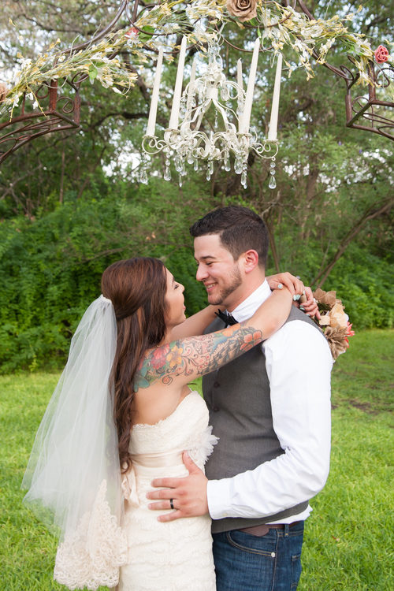
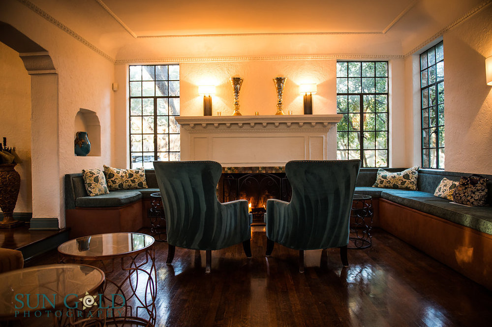
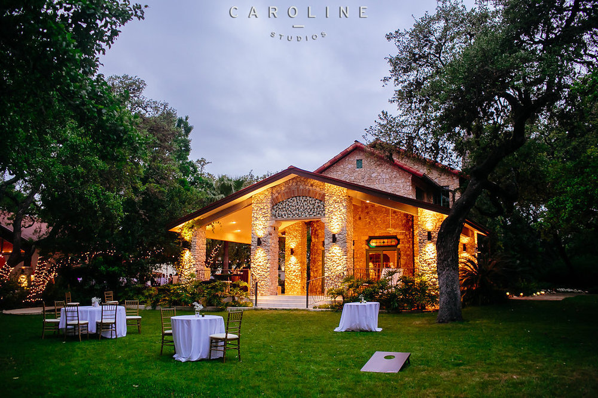

The Veranda
A historic 1931 estate wedding and event venue in San Antonio, with a sweeping veranda and fountain courtyard.



About
The Veranda is a historic 1931 estate wedding and event venue in San Antonio, with a mansion, sweeping veranda, fountain courtyard, open-air pavilion, and cottage. The venue hosts weddings, birthdays, anniversaries, reunions, showers, and debutante parties, with exclusive Spice of Life catering, for 25 to 1000 guests per the own site.
Services
Weddings
Weddings at a historic 1931 estate, with mansion, veranda, courtyard, pavilion, and cottage.
Birthdays, anniversaries, and reunions
Showers and debutante parties
Exclusive Spice of Life catering
Catering by Spice of Life, the venue's exclusive caterer.
Visit
Contact
Call to book: +1 210-366-1220 Email: sales@theverandasa.com
The Veranda serves San Antonio, TX. Questions? Call +1 210-366-1220.